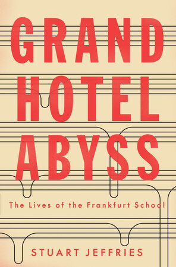
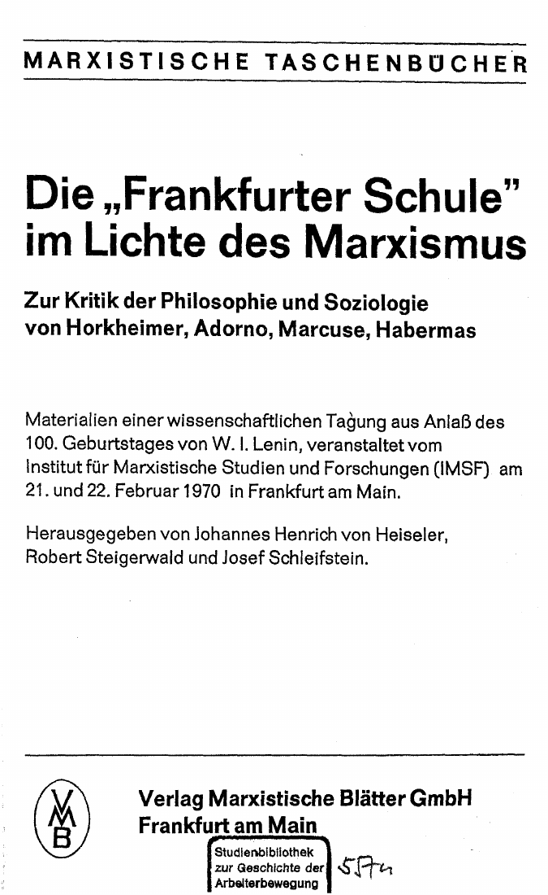
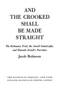

51:11 · 6 OPERE
Un'occhiata alla Scuola di Francoforte ed alla Arendt.
Il filo del discorso
Come distinguere la conoscenza di un autore dalla sua riduzione a un’etichetta? Dr Divago affronta la questione discutendo la Scuola di Francoforte e la ricezione di Hannah Arendt. Una lunga premessa contrappone la lettura diretta alla sicurezza prodotta da riassunti, ricerche veloci e popolarità in rete; il richiamo ai Demoni e all’autonomia kantiana conduce al valore del ragionamento individuale.
Leggi la sintesi completaRiduci la sintesi
Il primo caso concreto è un volume del 1970 che raccoglie una critica marxista a Horkheimer, Adorno, Marcuse e Habermas: il relatore lo usa contro l’identificazione della teoria critica con un’ortodossia politica uniforme. Il secondo è And the Crooked Shall Be Made Straight, con cui Jacob Robinson contestò la ricostruzione del processo Eichmann proposta da Arendt. Dr Divago attribuisce al libro un valore decisivo e interpreta polemicamente il successo editoriale della filosofa. La conclusione invita a conservare spazi di discussione anche minoritari. Le valutazioni su Arendt e le accuse di manipolazione restano sue posizioni; le note distinguono la critica documentata da conclusioni storiche o psicologiche non dimostrate.
I libri nel discorso

I demoni
Note sul riferimento
Copertina: Feltrinelli · edizione di riferimento
Dostoevskij e I demoni esplicitamente nominati; la frase è attribuita dal relatore a un personaggio.

Risposta alla domanda: che cos’è l’Illuminismo?
Identificazione probabile
Note sul riferimento
Copertina della raccolta che comprende il saggio sull’Illuminismo: Firenze University Press · Sette scritti politici liberi · 2011 · a cura di Maria Chiara Pievatolo
Copertina del volume cartaceo FUP che comprende il saggio, riscontrato dal catalogo universitario. L’ISBN appartiene alla raccolta; il filmato non annuncia un’edizione e il titolo del saggio è un’identificazione probabile della citazione.
La Mündigkeit kantiana e il coraggio di orientarsi nel mondo; titolo del saggio non pronunciato, rimando probabile.

Grand Hotel Abyss. The Lives of the Frankfurt School
Identificazione probabile
Note sul riferimento
Copertina: Verso, edizione tascabile inglese del 26 settembre 2017, 448 pagine; prima edizione 2016.
Immagine autentica dell’opera, controllata visivamente; l’edizione di riferimento non è attribuita al filmato.
Espressione di Lukács ripresa da un autore inglese; trascrizione automatica Grand Hotel Budapest, normalizzazione al libro di Jeffries solo probabile.

Die „Frankfurter Schule“ im Lichte des Marxismus
Note sul riferimento
Frontespizio dell’opera: Verlag Marxistische Blätter, Francoforte sul Meno, 1970, Marxistische Taschenbücher, 184 pagine.
Frontespizio del volume, dalla copia digitale pubblicata da ETH. Non è una copertina esterna. Il nome Henrich è quello del frontespizio; alcune schede catalografiche riportano Heinrich. Nessuna verifica visiva dell’esemplare mostrato nel filmato è dichiarata.
Letti titolo, sottotitolo, collana e date del convegno 1970 dell’IMSF.

La banalità del male. Eichmann a Gerusalemme
Note sul riferimento
Copertina: Feltrinelli · Universale Economica Saggi · 2023
Immagine autentica dell’opera, controllata visivamente; l’edizione di riferimento non è attribuita al filmato.
Hannah Arendt, banalità del male e reportage sul processo Eichmann esplicitamente nominati.

And the Crooked Shall Be Made Straight
Note sul riferimento
Frontespizio dell’opera: The Macmillan Company, New York, 1965; Collier-Macmillan, Londra; 406 pagine.
Frontespizio autentico dell’edizione inglese conservata nella scansione Google Books: il testo è leggibile ed è distinto da una copertina esterna. L’anno 1965 è riscontrato catalograficamente; l’esemplare fisico del video non è stato esaminato.
Jacob Robinson, titolo tradotto oralmente, sottotitolo e anno 1965 esplicitamente indicati.